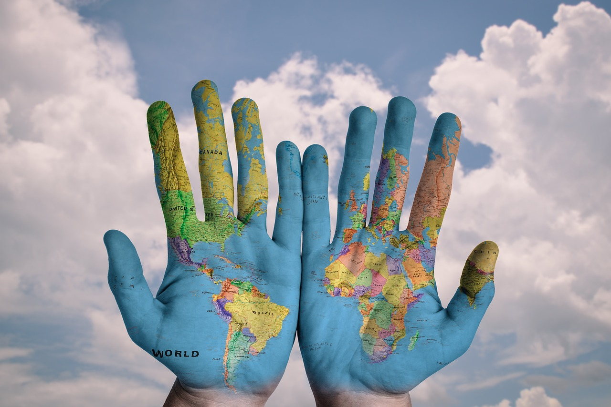

Sua doação, por menor que seja, pode fazer uma diferença enorme. Ela pode fornecer alimentos, abrigo, acesso à saúde e educação, e a oportunidade de recomeçar para famílias e indivíduos que perderam tudo.

Um Olhar Essencial
A Jornada Simbólica e a Realidade Humana
A palavra "refugiado" carrega consigo um texto símbolo de deslocamento, busca por segurança e, muitas vezes, recomeço. No entanto, é fundamental ir além do conceito e entender que por trás dessa palavra estão milhões de histórias humanas, repletas de desafios, perdas e a resiliência de indivíduos e famílias forçadas a deixar seus lares. Cada refugiado representa uma vida interrompida por conflitos, perseguições ou graves violações de direitos humanos, que busca, acima de tudo, paz e um lugar para viver com dignidade.
Dados Estatísticos: A Dimensão Global do Deslocamento Forçado
A escala do deslocamento forçado global é um indicador crítico da urgência dessa questão humanitária. Os dados estatísticos mais recentes, compilados por organizações como o ACNUR (Alto Comissariado das Nações Unidas para Refugiados), revelam um número recorde de pessoas deslocadas à força em todo o mundo. Esses números incluem refugiados que cruzaram fronteiras internacionais, deslocados internos dentro de seus próprios países, solicitantes de asilo e outras pessoas em necessidade de proteção internacional. É crucial analisar esses dados não apenas como números frios, mas como um reflexo de crises humanitárias que se aprofundam e a necessidade premente de soluções duradouras. Compreender a magnitude do problema é o primeiro passo para mobilizar apoio e recursos. A Condição Precária de Refugiado: Desafios e Necessidades Urgentes A condição precária de refugiado é uma realidade dolorosa para muitos. Após o trauma do deslocamento, essas pessoas frequentemente se deparam com uma série de desafios que comprometem sua segurança, saúde e bem-estar. Essa precariedade se manifesta de diversas formas: Acesso limitado a serviços básicos: Muitos refugiados vivem em campos superlotados ou assentamentos informais, com acesso restrito à água potável, saneamento, alimentação adequada e cuidados de saúde. Vulnerabilidade à violência e exploração: A falta de proteção e a desesperança podem expor refugiados, especialmente mulheres e crianças, a riscos de violência, tráfico humano e exploração. Barreiras para a integração: Dificuldades com o idioma, discriminação e a falta de oportunidades de trabalho e educação podem impedir a integração dos refugiados nas comunidades de acolhimento. Trauma psicológico: Muitos refugiados carregam traumas profundos decorrentes de suas experiências de guerra, perseguição e deslocamento, exigindo apoio psicossocial adequado. Entender a precariedade da condição de refugiado é essencial para direcionar esforços humanitários e políticas públicas que visem a proteção e a garantia de direitos, permitindo que essas pessoas reconstruam suas vidas com segurança e dignidade.
Entre a guerra e o clima, a fome é a triste realidade de inúmeras famílias refugiadas.
R$ 50,00
Sua doação de R$ 50 pode oferecer um kit de higiene essencial para uma família de refugiados.
Doar R$ 50R$ 70,00
Com R$ 70, você garante água potável e alimentos básicos para uma pessoa por uma semana.
Doar R$ 70R$ 90,00
Ajude a fornecer material escolar para uma criança refugiada e garanta seu acesso à educação.
Doar R$ 90R$ 130,00
Sua generosidade de R$ 130 pode fornecer abrigo temporário e apoio psicológico para um indivíduo.
Doar R$ 130